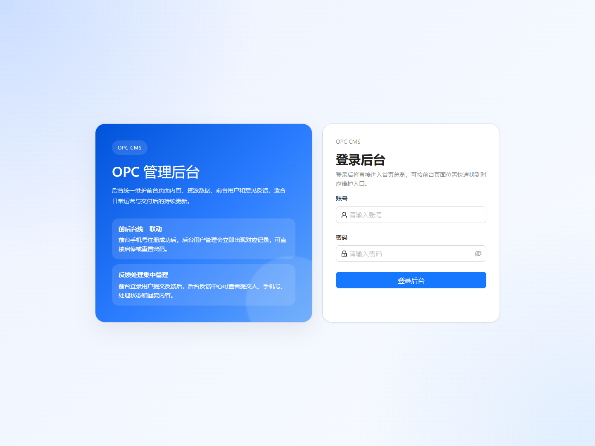

FULL-STACK DEVELOPMENT / BUSINESS OPERATIONS
One portal. Connected business workflows.
Public website + operations console + Python API.
Content, member applications, resource catalogs, orders and account workflows.

Actual local browser capture: React administration login.
Chinese application UI; English case study. API login was not exercised.Publish content → Receive applications → Review submissions → Manage resources